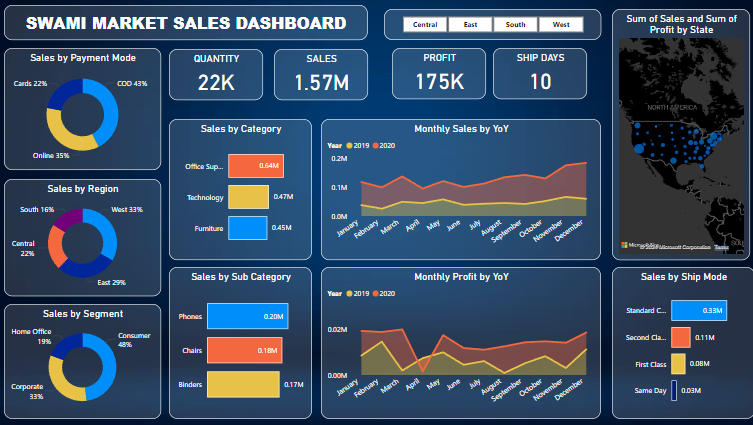

In this project, I designed and implemented a comprehensive database management system using SQL to efficiently organize, store, and retrieve data. The primary objective was to
"analyze customer data and improve business insights for decision-making"


This project highlights Kamal Store's 2024 sales data using Excel, focusing on customer demographics and product performance across platforms.

Developed a Power BI sales dashboard for Swami Super Market, showcasing total sales, profit, and key insights by region, category, and payment modes. Includes a 15-day sales forecast for business planning

In this project, I built a Power BI dashboard analyzing Netflix's TV shows and movies by type, ratings, genre, and release year. The dashboard highlights trends in content, top countries by title count, and provides insights into audience ratings and genre popularity
Used Excel to analyze bike sales data, identifying key trends, customer preferences, and product performance. Created pivot tables and visualizations to highlight sales patterns, helping drive data-driven decisions.

A Power BI dashboard that tracks patient admissions, discharges, bed occupancy, doctor feedback, and billing insights. It visualizes key metrics, helping optimize hospital operations and financial management.

A Power BI dashboard showcasing product sales, session trends, and top-performing items for a clothing brand. It tracks metrics like total units ordered, session counts, and sales performance by SKU, offering insights into customer behavior and product demand.
{kind=link}